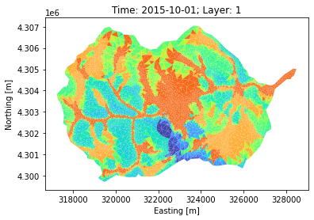

Plot subsurface variables
Contents

Plot subsurface variables#
# skip this if package has already been installed
!pip install modvis
import numpy as np
import modvis.ats_xdmf as xdmf
import modvis.plot_vis_file as pv
model_dir = "../data/coalcreek"
Download the sample data when running on Google Colab
import os
if not os.path.exists(model_dir):
!git clone https://github.com/pinshuai/modvis.git
%cd ./modvis/examples/notebooks
import vis data#
visfile = xdmf.VisFile(model_dir, domain=None, load_mesh=True, columnar=True)
plot subsurface satuation#
single column#
fig, ax = pv.plot_column_data(visfile, var_name = "saturation_liquid", cmap = "coolwarm",
col_ind=0)
single layer#
fig, ax = pv.plot_layer_data(visfile, var_name = "saturation_liquid",
layer_ind = 0, time_slice= "2015-10-01",
cmap = "coolwarm")
plot groundwater table#
single column#
ihead = pv.plot_column_head(visfile, col_ind = 0)
GW surface#
fig, ax, tpc = pv.plot_gw_surface(visfile, time_slice = 0, contour = True,
contourline = True, nlevel = np.arange(2700,3665, 50),
colorbar = True,
)
Volumetric water content#
fig, ax, tpc = pv.plot_water_content(visfile, layer_ind = 0,
vmin = 0.1, vmax = 0.22, cmap = 'turbo',
time_slice=0)
